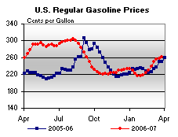

Released on March 28, 2007
(Next Release on April 4, 2007)
Two Key Statistics to Watch
With Major League Baseball’s opening day just a few days away, many sports fans are once again turning their attention towards baseball. Home runs, runs batted in, runs scored, and batting average are all major baseball statistics that fans use to analyze a player. Slightly less well-known statistics include on-base percentage and slugging average, but savvy fans know these latter two statistics can tell a lot about a player’s worth to his team. In oil markets, much of the attention on the weekly data is focused on the change in inventories for crude oil, gasoline, and distillate fuel, as well as, demand. Two additional statistics that knowledgeable oil analysts should closely watch over the next several weeks are crude oil inputs to refineries and total gasoline imports. Both statistics will help analysts gauge the relative tightness of the U.S. gasoline market, which, now that spring has arrived, is one of several major factors likely to determine near-term oil price direction.
One of the main reasons why gasoline markets have tightened over the last several weeks is the reduction in gasoline production stemming from refinery maintenance and unplanned outages. Crude oil inputs have started to rise recently, but continue to remain below 15 million barrels per day. Crude oil inputs last March were also reduced as some refineries were still recovering from the effects of Hurricanes Katrina and Rita. Thus, a better comparison might be March 2005, when crude oil inputs averaged 15.2 million barrels per day, significantly higher than levels seen over the last several weeks. Nevertheless, on a moving four-week average basis, crude oil inputs began increasing two weeks ago (see graph at http://tonto.eia.doe.gov/oog/info/twip/twip_crude.html#inputs) and should this continue, crude oil inputs could be above 15 million barrels per day as early as this week (which will be known for sure when the data are released next Wednesday). Still, crude oil inputs will have to be sustained well above 15 million barrels per day this spring and summer to help keep gasoline production sufficiently high to meet expected demand increases.
Another reason why gasoline markets have tightened, causing gasoline prices to rise, is a reduction in total gasoline imports (finished gasoline plus blending components). Total gasoline imports averaged over 1.1 million barrels per day in 2006, but until data for last week were released earlier today, they had not been above 1 million barrels per day for the previous seven weeks. To help gasoline supplies keep pace with demand increases that are likely over the next several weeks, total gasoline imports will need to remain above 1 million barrels per day most of the time.
While there are many statistics analysts can watch in monitoring gasoline market conditions, two statistics that they may want to add to their arsenal over the next several weeks are crude oil inputs to refineries and total gasoline imports. Combined with information on gasoline inventories and demand, they will provide a more enlightened picture of current market conditions and insight into which way gasoline prices might head. Until domestic gasoline production and imports both increase substantially, retail prices are not likely to experience a noticeable downturn. The good news is that supplies may have begun to increase. How quickly they increase relative to expected demand increases will likely determine when prices may start heading lower.
Gasoline Prices Continue to Increase; Diesel Decreases Slightly Again
For the eighth consecutive week, gasoline prices increased, rising 3.3 cents to 261.0 cents per gallon for the week of March 26, 2007. Prices are now 11.2 cents per gallon higher than at this time last year. All regions reported price increases. East Coast prices were up 2.7 cents to 257.5 cents per gallon, while Midwest prices rose 3.3 cents to 251.8 cents per gallon. Prices for the Gulf Coast were up 3.4 cents to 244.2 cents per gallon. For the second straight week, the largest regional increase was in the Rocky Mountains, where prices increased 5.0 cents to 253.8 cents per gallon. West Coast prices were up 3.9 cents to 301.6 cents per gallon, with the average price for regular grade in California up 3.1 cents to 315.2 cents per gallon, 48.3 cents per gallon above last year’s price.
Retail diesel prices decreased for the second consecutive week, falling 0.5 cent to 267.6 cents per gallon. However, prices remain 11.1 cents per gallon higher than at this time last year. East Coast prices fell 0.4 cent to 265.7 cents per gallon, while Midwest prices were down 1.1 cents to 265.5 cents per gallon. The Gulf Coast saw an increase of 0.3 cent to 264.3 cents per gallon and Rocky Mountain prices were up 1.5 cents to 278.0 cents per gallon. Prices on the West Coast saw a decrease of 1.0 cent to 280.3 cents per gallon. California prices fell 0.6 cent to 286.9 cents per gallon, but remain 14.2 cents per gallon higher than at this time last year.
Propane Stockdraw Resumes Seasonal Decline
Following the surprisingly sharp drop in propane inventories from the prior week, propane markets returned to more seasonal activity last week with a weekly inventory decline of about 0.7 million barrels, leaving the nation’s propane supply at an estimated 25.2 million barrels as of March 23, 2007. But with the arrival of spring, and with slowly rising temperatures throughout most of the major propane heating regions, propane supplies continue to maintain a relatively modest comfort level for this time of year. Regionally, continued strong imports in the East Coast have begun to replenish the region’s inventories that were severely impacted from major supply problems a month earlier. As such, East Coast inventories reported their third consecutive weekly gain, measuring 0.6 million barrels. The Midwest region reported a loss last week, down 0.6 million barrels, while Gulf Coast inventories also continued lower following a weekly decline of 0.5 million barrels. The combined Rocky Mountain/West Coast region continued its downward trend last week with a drop of 0.1 million barrels, leaving inventories in the region at only 0.8 million barrels. Propylene non-fuel use inventories moved sharply lower last week with a 0.4-million-barrel drop. Consequently, inventories for this fuel accounted for a significantly lower 10.9 percent share of total propane/propylene inventories, compared with the prior week’s 12.2 percent share.
Text from the previous editions of “This Week In Petroleum” is now accessible through a link at the top right-hand corner of this page.
| Retail Prices (Cents Per Gallon) | |||||||
|  | |||||||
| Retail Data | Changes From | Retail Data | Changes From | ||||
| 03/26/07 | Week | Year | 03/26/07 | Week | Year | ||
| Gasoline | 261.0 | Diesel Fuel | 267.6 | ||||
| Spot Prices (Cents Per Gallon) | |||||||||||||||||||||||||||||||||||||||
|
|||||||||||||||||||||||||||||||||||||||
| Stocks (Million Barrels) | |||||||
 |
|||||||
 |
|||||||
| Stocks Data | Changes From | Stocks Data | Changes From | ||||
| 03/23/07 | Week | Year | 03/23/07 | Week | Year | ||
| Crude Oil | 328.4 | Distillate | 118.0 | ||||
| Gasoline | 210.2 | Propane | 25.225 | ||||